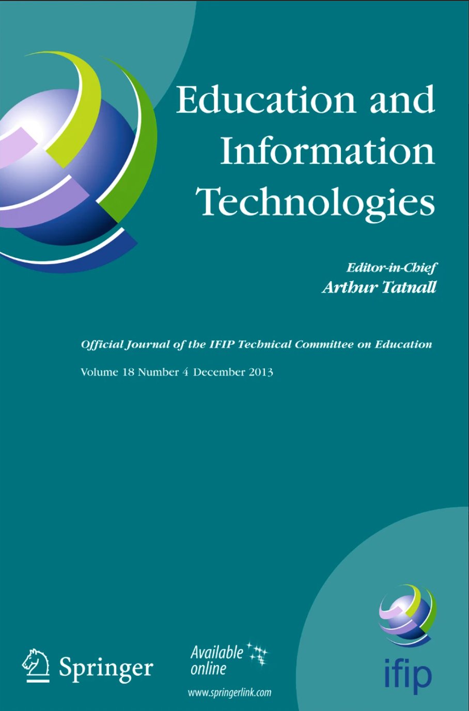

About me
AngelaLopI am a data and social scientist with training in computational analysis, economics, and international studies, focused on understanding and communicating social and economic inequalities.
I believe that better public policy starts with high-quality data, from rigorous data collection and statistical production to careful analysis and clear visualization. My work focuses on inequalities in education, labor markets, income, and access to opportunities, combining hands-on experience in official statistics, data engineering, and policy analysis.
I use data analysis and visualization not only to explain patterns, but to support evidence-based decision-making in public and international policy contexts.
Selected Work
School Emergency Viewer: the August 2026 Earthquake
After the magnitude 7.4 earthquake of 10 August 2026 in Colombia, I built and published a School Emergency Viewer that locates schools inside the affected zone, integrates administrative records on their characteristics, and identifies those with reported damage, along with its severity and its source, including photographic records from school principals.
View Platform →EduAccess LAC: School Accessibility Platform
An interactive geo-platform built on school-accessibility indicators I calculated for the Inter-American Development Bank. It maps how easily students reach schools across five Latin American countries, with an AI assistant that turns plain-English questions into validated SQL.
View Platform →Panama Life Cycle Activity Explorer
How does participation in education, work, and retirement shift over a person's life, and how unevenly across Panama? This explorer maps it by age, gender, and region, showing where young people leave school or women exit the labor force.
View Project →Location Matters for Unlocking People's Potential
National averages mask wide inequalities. This project measures regional gaps in health and education within and across countries, showing how strongly birthplace shapes the human capital a person can build.
View Project →
Poverty Classification with Multi-Modal Data
Full poverty surveys are costly and slow. This project trains a machine learning model that sorts households into poverty categories from satellite imagery plus a few proxy means test questions, a lower-cost way to target social programs where survey data is missing.
View Repository → Private repo - request accessUnderstanding Crime and School Attendance in Chicago
Does neighborhood crime push students out of school? This interactive dashboard maps dropout patterns across Chicago schools and pinpoints where crime weighs most heavily on attendance.
View Repository →Selected Publications

Panama Poverty Assessment: Technical note on Labor Market
The World Bank, 2024

The State of Education in Latin America and the Caribbean: Learning Assessments
Inter-American Development Bank, 2024

DIGITAGRO: Investing in digital technology to increase market access for women agri-preneurs
The World Bank, 2022

Impact of Digital Technologies upon Teaching and Learning in Higher Education in Latin America
Education and Information Technologies, 2022